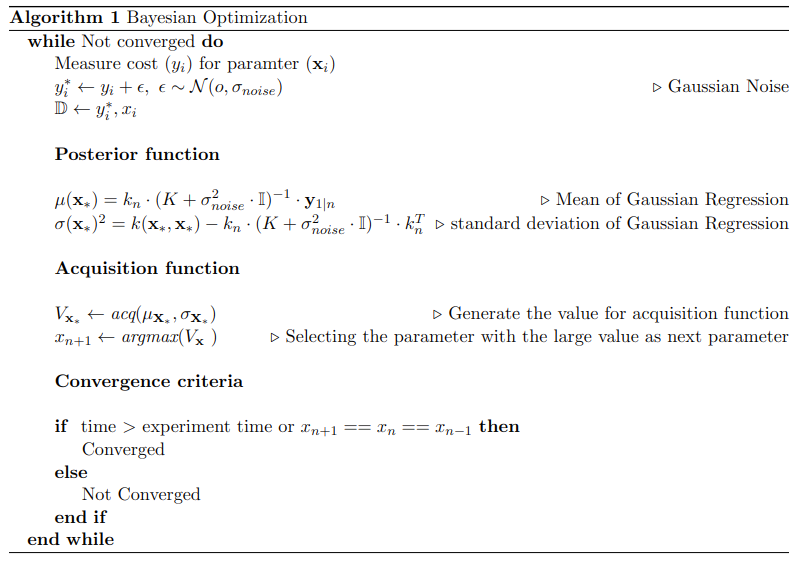

Optimization#
Overview#
Overview of the optimization is here

Config#
The config of the optimization is defined in the yaml file, example as follows.
Cost:
Name: "Met_cost" # name of the cost function stream
time: 90 # time of the cost function stream.
avg_time: 14 # average time of the cost function stream.
mean_time: 5 # mean time of the cost function.
Optimization:
n_parms: 1 # number of parametes
n_steps: 15 # number of steps
n_exploration: 3 # number of exploration steps
range: [0, 85] # range of the parameters
model_save_path: "models/"
device: "cuda" # device to use
n_start_points: 3 # number of start points
acquisition: 'ei' # other options are qei, pi, ucb
kernel_function: 'se' # other options se, linear, fixed noise
GP: 'Regaular' # other options, fixed noise GP.
Function information#
- class HIL.optimization.BO.BayesianOptimization(n_parms: int = 1, range: ndarray = array([0, 1]), noise_range: ndarray = array([5.e-03, 1.e+01]), acq: str = 'ei', kernel: str = 'SE', model_save_path: str = '', device: str = 'cpu', plot: bool = False, kernel_parms: Dict = {})[source]#
Bases:
objectBayesian Optimization class for HIL
- run(x: ndarray, y: ndarray, reload_hyper: bool = False) ndarray[source]#
Run the optimization with input data points
- Parameters:
x (NxM np.ndarray) – Input parameters N -> n_parms, M -> iter
y (Mx1) – Cost function array
reload_hyper (bool, optional) – Reload the hyper parameter trained in the previous iter. Defaults to True.
- Returns:
parameter to sample next
- Return type:
np.ndarray